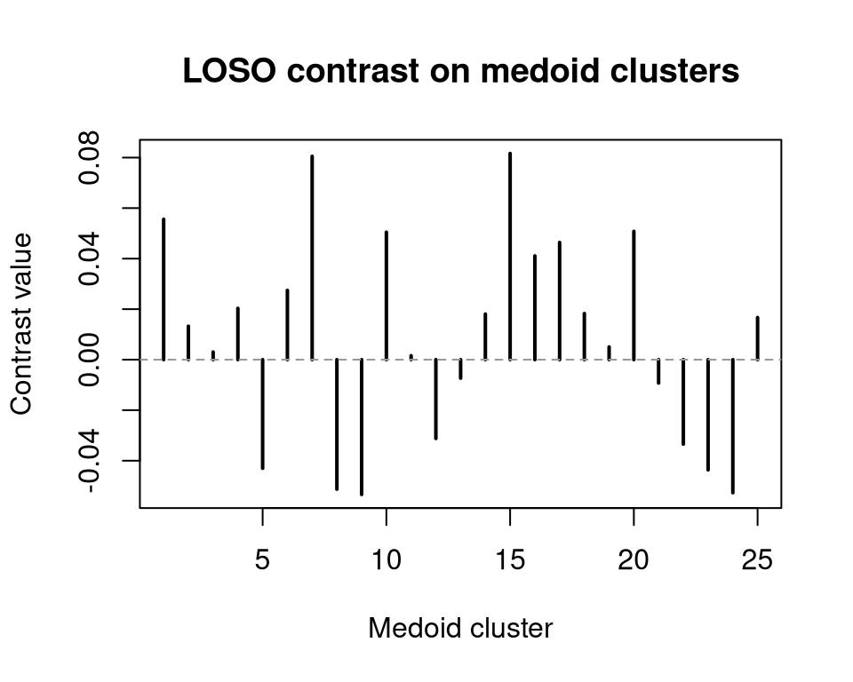

Contrasts, Inference, and Bootstraps
Source:vignettes/dkge-contrasts-inference.Rmd
dkge-contrasts-inference.RmdThis vignette demonstrates how to generate subject-level contrasts using DKGE methodology, apply both analytic and bootstrap-based statistical inference procedures, and interpret the resulting outputs. We will walk through the complete workflow from contrast specification to statistical testing and visualization.
Demo Dataset
We begin by setting up a simulated dataset that illustrates the key components of a DKGE analysis. This synthetic dataset includes multiple subjects with different design matrices, beta coefficients, and spatial coordinates that will serve as the foundation for our contrast and inference examples.
library(dkge)
S <- 5; q <- 4; P <- 25; T <- 60
betas <- replicate(S, matrix(rnorm(q * P), q, P), simplify = FALSE)
designs <- replicate(S, {
X <- matrix(rnorm(T * q), T, q)
qr.Q(qr(X))
}, simplify = FALSE)
centroids <- replicate(S, matrix(runif(P * 3, -10, 10), P, 3), simplify = FALSE)
subjects <- lapply(seq_len(S), function(s) dkge_subject(betas[[s]], designs[[s]], id = paste0("sub", s)))
bundle <- dkge_data(subjects)
fit <- dkge(bundle, K = diag(q), rank = 3)
fit$centroids <- centroids # attach for transport helpers; pass explicitly in productionLeave-One-Subject-Out (LOSO) Contrasts
The LOSO approach provides an unbiased method for computing
subject-level contrasts by using cross-validation. The
dkge_loso_contrast() function computes these
cross-validated subject contrasts while maintaining consistency of
transport operators across all cross-validation folds, ensuring that
spatial alignment remains stable throughout the procedure.
contrast_vec <- c(1, -1, 0, 0) # effect1 minus effect2
loso <- dkge_contrast(fit, contrast_vec, method = "loso")
transported <- dkge_transport_contrasts_to_medoid(
fit,
loso,
medoid = 1L,
centroids = centroids,
mapper = dkge_mapper("sinkhorn", epsilon = 0.05, lambda_xyz = 1)
)
str(loso$values, max.level = 1)
#> List of 1
#> $ contrast1:List of 5The resulting data structure contains several important components
that capture different stages of the contrast computation process. The
loso$values component stores the raw subject-level contrast
vectors before any spatial transport has been applied. After transport
to the medoid space, transported[[1]]$value contains the
contrast values that have been aligned to the medoid parcellation and
averaged across all subjects. Additionally,
transported[[1]]$subj_values preserves the
individual-subject contributions after transport, which can be useful
for detecting outliers or understanding between-subject variability.
We can visualize the LOSO medoid map to quickly inspect the spatial pattern of contrast values.
loso_medoid <- transported[[1]]$value
plot(loso_medoid, type = "h", lwd = 2, main = "LOSO contrast on medoid clusters",
xlab = "Medoid cluster", ylab = "Contrast value")
abline(h = 0, col = "grey60", lty = 2)
Analytic Inference on Components
For statistical testing of group-level effects, we can apply analytic
inference methods that leverage parametric assumptions about the
underlying distributions. The dkge_component_stats()
function combines subject loadings across the group, optionally performs
sign-flip inference to handle arbitrary sign ambiguity in the
components, and returns comprehensive summaries with false discovery
rate (FDR) adjustments to control for multiple comparisons.
comp_stats <- dkge_component_stats(
fit,
components = 1:2,
mapper = list(strategy = "sinkhorn", epsilon = 0.05, lambda_spa = 0.5),
centroids = centroids,
inference = list(type = "parametric"),
medoid = 1L
)
#> Warning in mapply(FUN = f, ..., SIMPLIFY = FALSE): longer argument not a
#> multiple of length of shorter
head(comp_stats$summary)
#> component cluster stat p p_adj significant
#> 1 1 1 1.279 0.270 0.480 FALSE
#> 2 1 2 1.175 0.305 0.480 FALSE
#> 3 2 1 -1.372 0.242 0.480 FALSE
#> 4 2 2 -0.941 0.400 0.480 FALSE
#> 5 1 1 -0.269 0.801 0.801 FALSE
#> 6 1 2 -1.112 0.328 0.480 FALSEThe resulting summary tibble provides a comprehensive
overview of the statistical results, including component identifiers,
cluster indices, test statistics, and both raw and FDR-adjusted
p-values. This structured output enables systematic identification of
clusters that surpass your predetermined significance threshold while
accounting for multiple comparison corrections.
Bootstrap Inference
When the underlying effect distributions deviate substantially from Gaussian assumptions, or when sample sizes are small, bootstrap-based inference provides a more robust alternative to parametric methods. Both multiplier and resampling bootstrap approaches are available, and the analytic fit computed in the previous section can be efficiently re-used to seed the bootstrap resampling procedure, avoiding redundant computations.
subject_medoid <- lapply(seq_len(nrow(transported[[1]]$subj_values)), function(idx) {
transported[[1]]$subj_values[idx, ]
})
boot <- dkge_bootstrap_projected(
subject_medoid,
B = 200,
seed = 2
)
head(boot$medoid$mean)
#> [1] 0.137 -0.016 -0.012 0.110 -0.301 0.174The dkge_bootstrap_projected() function returns
comprehensive bootstrap statistics, including confidence intervals and
standard errors, specifically computed for contrasts in the medoid
space. For analyses that do not require spatial transport, you can
alternatively use dkge_bootstrap_qspace() to work directly
in the component basis, which bypasses the transport step and may be
computationally more efficient for certain applications.
Practical Recommendations
When choosing between analytic and bootstrap inference methods, several considerations can guide your decision. Analytic inference provides computational efficiency and works reliably when you have moderate subject counts and when residual distributions appear approximately symmetric. However, bootstrap methods offer greater robustness to distributional assumptions, though they require more computational time. To mitigate the computational burden of bootstrap inference, the package leverages warm-started Sinkhorn transport algorithms and automatically caches dual variables to reduce runtime in subsequent iterations.
Regardless of the inference method chosen, it is essential to inspect
the loso$values output to identify potential outlier
subjects before reporting group-level results. This quality control step
helps ensure that your conclusions are not unduly influenced by atypical
individual responses and maintains the integrity of your statistical
inferences.